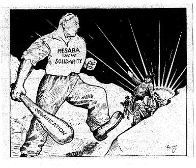

Submitted on Fri, 11/19/2010 - 4:58am
27 miners missing after New Zealand explosion
By the CNN Wire Staff
November 19, 2010 -- Updated 0829 GMT (1629 HKT)
(CNN) -- Twenty-seven miners were missing hours after an underground explosion on New Zealand's west coast, company officials said Friday.
Two other miners had emerged from the the Pike River coal mine in Atarau, authorities said.
About three hours after the blast, police said no fatalities had been reported. Emergency workers were going into the mine, TV New Zealand said.
The two miners who had surfaced arrived at the Grey Base Hospital, an hour away, with non-life-threatening injuries, TV New Zealand said. They had moderate blast injuries, with one being treated in the emergency room and the other in a ward.
Emergency crews had interviewed the two miners, trying to determine what happened. The cause of the explosion was not immediately known, police said.
According to early accounts, an electrician went into the mine to investigate a power outage and discovered a driver who had been blown off his loader about 1,500 meters [0.9 mile] into the mine shaft.
A special mine rescue team was among the many emergency workers on the scene.
Communications underground were "terminated" when the explosion happened, Pike River CEO Peter Whittall said.
The entrance to the mine is about 2.2 kilometers along and then branches out, police said. The power outage might have compromised ventilation inside the mine.
Smoke hung outside the mine, trees were charred and a hut had been blown off a hill, TV New Zealand said.
There are two routes out of the mine, Whittall said. Unlike the Chilean mine where 33 miners were rescued in mid-October, the Pike River mine has steep terrain, and the shafts run horizontally into the hill, not vertically into the ground, he told TV New Zealand.
The remote mine is about 50 kilometers [31 miles] northeast of Greymouth, police said.
Submitted on Sat, 06/23/2007 - 2:10am
 Hashmeya (pictured, right, with a written message of thanks to the IWW for its solidarity with workers in Iraq) is a native of Basra and a 25-year veteran in the Iraqi Department of Electricity. While she is the first woman to rise democratically from the ranks to represent a national Iraqi labor union, she emphasizes that she is not alone - that there are many dedicated and committed union women in the forefront of the Iraqi labor movement.
Hashmeya (pictured, right, with a written message of thanks to the IWW for its solidarity with workers in Iraq) is a native of Basra and a 25-year veteran in the Iraqi Department of Electricity. While she is the first woman to rise democratically from the ranks to represent a national Iraqi labor union, she emphasizes that she is not alone - that there are many dedicated and committed union women in the forefront of the Iraqi labor movement.
Ten days ago, two top leaders of Iraq's labor movement, Hashmeya Muhsin Hussein , President of the Electrical Utility Workers Union, General Federation of Iraqi Workers (EUWU-GFIW))and Faleh Abood Umara, General Secretary of the Federation of Oil Unions (FOU) spoke throughout the San Francisco Bay Area as part of an Iraqi labor tour of the US. They spoke urgently of Iraqi labor's unified demand for the end of the brutal US occupation and sought for the support of US labor in rejecting the imposition of the Oil Law which the US is using to force the surrender of Iraqi oil resources to foreign corporations as the price of their withdrawal.
Submitted on Tue, 05/30/2006 - 11:10am
By Jeff Pilacinski, Twin Cities GMB
On Saturday, June 3 we remember the valiant struggle of over 15,000 fellow workers and through our continued agitating in 2006, carry their fighting spirit forward. This date marks the 90th anniversary of the great mine workers strike on Minnesota’s Mesabi, Cuyuna, and Vermillion Iron Ranges – a strike that threatened the economic grip of the U.S. Steel war profiteers and strained relations between several prominent Wobbly organizers and the union’s general headquarters.
After a large uprising was crushed with the help of immigrant strike breakers in 1907, Minnesota mine workers were poised to confront the steel trust once again. In a report to the Minneapolis headquarters of the IWW’s Agricultural Workers Organization dated May 2, 1916, one organizer had “never before found the time so ripe for organization and action as just now.” The appeal from one Minnesota miner in the May 13, 1916 issue of the Industrial Worker summarized the workers’ discontent best as “the spirit of revolt is growing among the workers on the Iron Range,” and that there was a need for “workers who have an understanding of the tactics and methods of the IWW and who would go on the job, and agitate and organize on the job.” Less than a month later, an Italian worker at the St. James underground mine in Aurora opened his pay envelope and raged over his meager earnings under the corrupt contract system, whereby wages were based upon the load of ore dug and supplies used, not hours worked. By the time other miners arrived at the St. James for the night shift, production at the mine was halted. All pits in Aurora were soon shut down as the strikers proclaimed, “We’ve been robbed long enough. It’s time to strike.”
Submitted on Fri, 04/28/2006 - 8:36pm
The International Solidarity Commission of the Industrial Workers of the World stands in solidarity with rank and file members of the Mexican Miner's Union (SNTMMRM) who are demanding the right to their union officials of choice, and whom are engaged in active resistance through the occupation of the SICARTSA steel mill in Lazaro Cardenas, Michoacan. We condemn the violence against protesting union members, including the murder of at least three workers at SICARTSA, by police and military forces acting under the orders of the Mexican state and federal governments, and in cooperation with the interests of the Villacero Group management.
For decades, the Mexican government has served the interests of national and international capital by seeking to control the workers' movements in the country. These efforts, which have seen the repression of workers demanding independent and democratic unions has continued into the NAFTA era, with the intent of keeping Mexico's workers impoverished and desperate. Mexican workers have always claimed their dignity and resisted. It is in the last few years, that real successes have been made in the struggle for union freedom, with which workers have a strong tool to improve their standard of living. The IWW offers our sincerest hopes for this movement, and extends our support where this is possible.
The IWW demands that all levels of the Mexican government end their repression of protesting miners and steelworkers and withdraw their police and military forces from the SICARTSA steel mill and that the union autonomy of the SNTMMRM is respected.